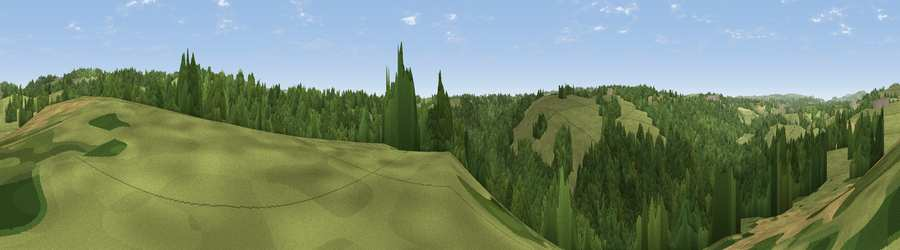

Viewpoint near Ipstones
#36486 in England · top 71% of its area beats it · near IpstonesWhere it is
The exact computed spot (SK 00125 49725). Click the marker for map links.
The view, rendered

A 360° render of this exact spot computed from the terrain model, tree cover and land cover — summer colours, afternoon light, calibrated against photographs of famous viewpoints. Real trees, hedges and buildings will differ in detail.
The panorama
Grey silhouette: terrain skyline in each direction (720 bearings, Earth curvature and refraction included). Dashed green: skyline with trees (+15 m) and buildings (+8 m) as obstacles. Blue strip: how far the ground is visible on each bearing.
Where the view opens
Wedge length = distance to the farthest visible ground on that bearing (vegetation-aware). Rings at 10, 25 and 50 km.
What fills the view
60% woodland · 37% grassland · 3% cropland
Angular shares of the visible panorama (visual magnitude), not map area. Landscape diversity 0.35 (0–1 Shannon).
Key numbers
More beautiful places nearby
The staircase of upgrades: each row has a higher view potential than everything closer. Driving times are estimates from straight-line distance, calibrated against real road routing — check an actual route before setting out.
| Place | Direction | Drive | Score |
|---|---|---|---|
| Viewpoint near Ipstones | NNE · 3 km | ~7 min | 54.9 |
| Ipstones Edge | E · 4 km | ~10 min | 60.0 |
| Viewpoint near Onecote | NE · 6 km | ~13 min | 61.9 |
| Viewpoint near Bradnop | NNE · 6 km | ~13 min | 65.2 |
| Viewpoint near Bradnop | NNE · 7 km | ~15 min | 65.3 |
| Viewpoint near Cauldon Lowe | ESE · 9 km | ~18 min | 71.9 |
| Viewpoint near Wootton | ESE · 10 km | ~19 min | 74.8 |
| Tissington Hill | E · 15 km | ~27 min | 75.5 |
53.04479, -1.99959 · source: screening · position refined by local search. Computed location — check access rights before visiting.